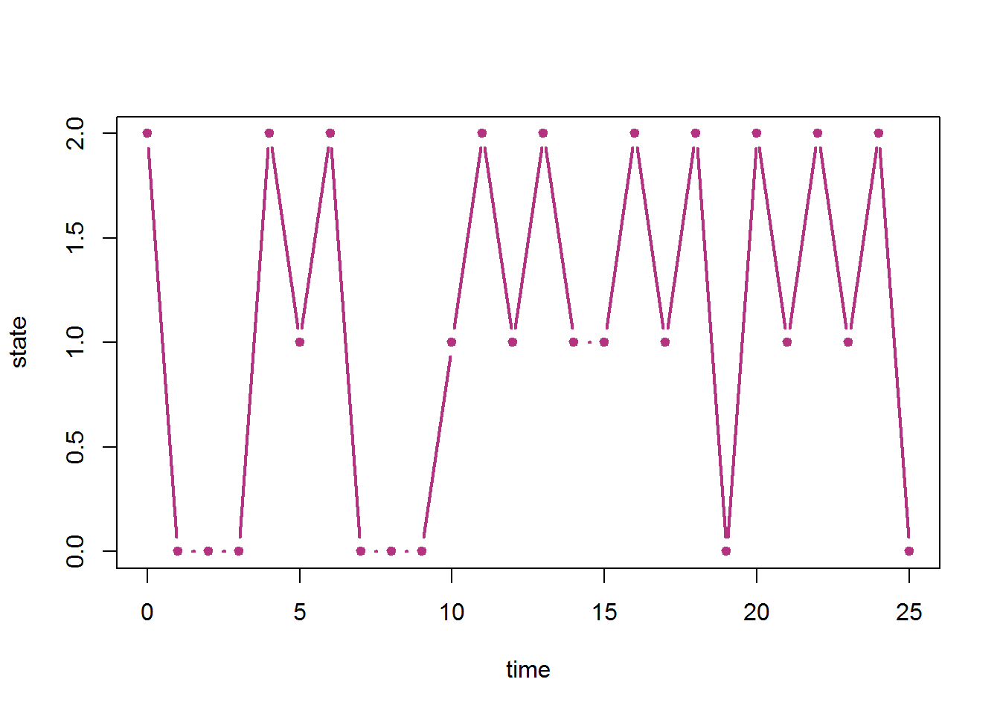

Chapter 8 Markov Chains
Markov chains are one of the most important classes of stochastic process. A discrete-time Markov chain (DTMC) consists of specifying a state space and a transition matrix. For us, our state space will generally be \(S=\{0,1,\ldots,k\}\) and our time index set will be \(\mathbb N_0\). The transition matrix gives us the transition probabilities between each pair of states and is given as \[T= \left(\begin{matrix} T_{00} & T_{01} & \cdots & T_{0k}\\ T_{10} & T_{11} & \cdots & T_{1k}\\ \vdots & \vdots & \ddots & \vdots\\ T_{k0} & T_{k1} & \cdots & T_{kk}\\ \end{matrix}\right)\] where \[T_{ij}=P(X_n=j\mid X_{n-1}=i).\]
We assume this stochastic process satisfied the Markov property or memorylessness, which means that the probabilities for the next time step only depends on the current state and no other previous history: \[P(X_n=j \mid X_{n-1}=i,X_{n-2}=\ell_{n-2},\ldots,X_{1}=\ell_{1},X_{0}=\ell_{0})=P(X_n=j \mid X_{n-1}=i)=T_{ij}.\]
8.1 Graph of a Markov chain
For a Markov chain with state space \(S\), we can represent the possible transitions graphically in Euclidean space. For now, let’s assume the state space is finite, but even chains with infinite state spaces can have graphs constructed in this way. Plot a point for each state in the plane \(\mathbb R^2\), and label each point by the state it corresponds to. Draw a directed edge (an arrow) from \(i\) to \(j\) whenever \(T_{ij}>0\).
We can use install.packages("igraph") if we wish to plot transition graphs for Markov chains.
Consider the transition matrix \[ T=\begin{pmatrix} 0.5 & 0.3 & 0.2\\ 0 & 0.3 & 0.7\\ 0.5 & 0.5 & 0 \end{pmatrix}. \] Here is some R code for plotting the transition diagram along with the plot.
library(igraph)
tmvec <- c(0.5,0.3,0.2,
0.0,0.3,0.7,
0.5,0.5,0.0)
TM <- matrix(tmvec,byrow=T,nrow=3)
mcg <- graph_from_adjacency_matrix(1*(TM>0))
plot.igraph(mcg,
vertex.size=50,
vertex.color="grey90",
edge.curved=0.25,
edge.color="black",
edge.label=tmvec[tmvec>0],
edge.loop.angle=c(pi,0,0,4*pi/2,0,0,0,0,0),
margin=0.5,
loop.size=2,
layout = matrix(c(0,1,2,1,1,0),byrow=T,nrow=3))8.2 Classification of states
State \(j\) is accessible from state \(i\), denoted \(i\to j\) if there is a path from state \(i\) to state \(j\) in the graph. This means that \((T^n)_{ij}>0\) for some \(n\geq0\). Note that \(i\to i\) is always trivially true for any state \(i\).
States \(i\) and \(j\) communicate if they are both accessible from each other, i.e. that \(i\to j\) and \(j\to i\). This is denoted \(i\leftrightarrow j\). Again, state \(i\) always trivially communicates with itself, \(i\leftrightarrow i\).
Communication and accessibility are transitive, that is, \(i\to j\) and \(j\to k\) implies \(i\to k\), and if \(i\) communicates with \(j\) and \(j\) communicates with \(k\), then \(i\) communicates with \(k\).
Normally, we break the state space into (communication) classes. A class is a subset of the state space so that all states in the class communicate with each other, but do not communicate with any other states. A Markov chain is called irreducible if the entire state space is a class. It is called reducible if it’s state space is made of more than one class. As a trivial example, the identity matrix (ones on the diagonal) is a transition matrix with each state being in a class by itself. The chain just starts in some state and stays there forever!
A state is called transient if, when starting in that state, there is a positive probability of leaving and never returning. A state is called recurrent if, when starting in that state, with probability one, the chain will always hit that state again at some finite future time. Given that the chain starts in state \(i\), let \(f_i\) be the probability that it is again in state \(i\) at any future time \(n\geq1\).
Definition. State \(i\) is called recurrent if , when starting in state \(i\), the probability that it is visited again in the future is one. That is \[f_i=\mathsf P(\cup_{n=1}^\infty \{X_n=i\}\mid X_0=i)=1.\]
State \(i\) is called transient if , when starting in state \(i\), the probability that it is visited again in the future is less than one. That is \[f_i=\mathsf P(\cup_{n=1}^\infty \{X_n=i\}\mid X_0=i)<1.\]
Example. For the transition matrix given above, we have: \(1\leftrightarrow2\leftrightarrow3\) and we have a single class \(\{0,1,2\}\). This is an irreducible Markov chain since its state space is a class.
Example. Consider transition matrix with state space \(S=\{0,1,2,3,4\}\) where positive entries are denoted by \(\star\)’s: \[T=\begin{pmatrix} \star&0&\star&0&0\\ 0&0&\star&0&\star\\ \star&0&\star&0&0\\ 0&0&0&\star&\star\\ 0&0&0&\star&0\\ \end{pmatrix}.\] This has classes \(\{0,1,2\}\) and \(\{3,4\}\). Note that the latter is accessible from the former, but not vice versa: \(\{0,1,2\}\to\{3,4\}\). This is an reducible Markov chain since its state space is not a single class. Eventually, the chain will get absorbed into class \(\{3,4\}\) and stay there forever.
8.3 Distribution at time \(n\)
Let \(\mathbf p_n\) be the distribution of the process at time \(n\). We call \(\mathbf p_0\) the initial distribution of the process. For a process on state space \(S=\{0,1,2,\ldots,m\}\), we have \[\mathbf p_n=\big(P(X_n=0),P(X_n=1),P(X_n=2),\ldots,P(X_n=m)\big)\] Note that this is actually conditional on knowing the initial distribution usually, i.e. when we write \(\mathbf p_n\) and we ask about \(P(X_n=i)\), we normally mean \(P(X_n=i\mid X_0\sim \mathbf p_0)\). However, we could be conditioning on the state at any earlier time as well.
For example, with \(S=\{0,1,2,3\}\), a point mass on state \(2\) initially is \(\mathbf p_0=(0,0,1,0)\) which indicates that \(X_0=2\) with certainty. If we wish to select the initial state randomly between states 1 and 2 with a fair coin flip, then \(\mathbf p_0=(0,0.5,0.5,0)\).
The future distribution of the process is given by matrix multiplication: \[\mathbf p_n = \mathbf p_{n-1} T.\] And from this, we can get the distribution at any future time: \[\mathbf p_{n} = \mathbf p_{0} T^n,\] \[\mathbf p_{n+m} = \mathbf p_{n} T^m.\] We can think of the transition matrix raised to a power \(T^n\) as the “\(n\)-step transition matrix.” Be careful to note that this is matrix exponentiation using standard matrix multiplication.
With \[
T=\begin{pmatrix}
0.5 & 0.3 & 0.2\\
0 & 0.3 & 0.7\\
0.5 & 0.5 & 0
\end{pmatrix},
\]
if we start the process with initial distribution \(\mathbf p_0=(0.7,0.1,0.2)\) then the distribution at time one is
\[\begin{aligned}
X_1\sim \mathbf p_1 &=\mathbf p_0 T\\
&=(0.7,0.1,0.2)\begin{pmatrix}
0.5 & 0.3 & 0.2\\
0 & 0.3 & 0.7\\
0.5 & 0.5 & 0
\end{pmatrix}\\[4px]
&=(0.45, 0.34, 0.21)
\end{aligned}
\]
we can do this in R with the following code (assuming you already have TM enterd)
x <- c(0.7,0.1,0.2)
x %*% TM## [,1] [,2] [,3]
## [1,] 0.45 0.34 0.21Hence \(\mathbf p_1=(0.45, 0.34, 0.21)\) as desired.
And the distribution of the process at time \(n=5\) is
\[\begin{aligned}
X_5\sim \mathbf p_5 &=\mathbf p_0 T^5\\
&=(0.7,0.1,0.2)\begin{pmatrix}
0.5 & 0.3 & 0.2\\
0 & 0.3 & 0.7\\
0.5 & 0.5 & 0
\end{pmatrix}^5\\[4px]
&\approx(0.31946, 0.364344, 0.316196)
\end{aligned}
\]
And in R this is given below. Note that we need to use the expm matrix exponential library. Also note the parentheses around the transition matrix raised to a power (TM %^% 5).
library(expm)
x <- c(0.7,0.1,0.2)
x %*% (TM %^% 5)## [,1] [,2] [,3]
## [1,] 0.31946 0.364344 0.3161968.4 Simulating a Markov chain in R
Sampling from a discrete distribution can be accomplished as follows. Let \(\mathbb p=(p_0,p_1,p_2,\ldots,p_{m-1},p_m)\) be a probability mass function on state space \(S=\{0,1,2,\ldots,m\}\). If we wish to sample formt he state space according to this distribution we can accomplish this in R using sample(0:m,1,prob=c(p0,p1,\ldots,pm)).
Suppose we have a Markov chain with state space \(\{0,1,2,3,4,5\}\) and we wish to choose the initial state \(X_0\) from initial distribution \(\mathbf p_0=(0.2,0,0.1,0.4,0.2,0.1)\). We can accopmlish this with the following code.
sample(0:5,1,prob=c(0.2,0,0.1,0.4,0.2,0.1))Now, once we know the precise current state of the process, we select the state at the next timestep by randomly sampling from the state space according to the appropriate row of the transition matrix. If \(X_{n-1}=i\), we sample \(X_n\) using the \(i^{th}\) row of \(T\).
x0 <- sample(0:2,1,prob=c(0.2,0.7,0.1))
x1 <- sample(0:2,1,prob=TM[x0+1,])Note, that since we index our sample space starting from zero, we must add one to the state to get R’s index number, i.e. state \(i\) corresponds to row \(i+1\) by R’s indexing scheme.
Now we just repeat this procedure for any number of timesteps. Here is a full R code that sets the transition matrix, samples the initial state randomly and simulates the chain for some number of timesteps and plots the resulting sample path.
TM <- matrix(c(0.5,0.3,0.2,
0.0,0.3,0.7,
0.5,0.5,0.0),byrow=T,nrow=3)
S <- 0:(nrow(TM)-1)
nsteps <- 25
initdistr <- c(0.2,0.5,0.3)
x <- numeric(length=nsteps+1)
x[1] <- sample(S,1,prob=initdistr)
for (n in 1:nsteps){
x[n+1] <- sample(S,1,prob=TM[x[n]+1,])
}
plot(0:nsteps,x,type="b",lwd=2,pch=20,col=rgb(0.7,0.2,0.5),xlab="time",ylab="state")
8.5 Return times and hitting probabilities
Let \(f_i\) be the probability that, when starting in state \(i\), the chain ever returns to state \(i\) at some point in the future. \[ \begin{aligned} f_i&=\mathsf{P}(X_n=i \text{ for some } n\in\mathbb N\mid X_0=i)\\ &=\mathsf{P}(X_1=i \text{ or } X_2=i \text{ or } \cdots\mid X_0=i)\\ &=\mathsf{P}\left(\cup_{n=1}^\infty \{X_n=i\} \mid X_0=i\right) \end{aligned} \] Then \(1-f_i\) is the probability that the chain immediately leaves state \(i\) and never returns. It is possible that \(f_i=1\) or \(f_i=0\) also. Consider the trivial chain with a single state \(S=\{0\}\) that just stays there forever which implies \(f_0=1\). Consider the chain where state \(5\) immediately jumps to state \(3\) (with probability 1) but \(3\not\to5\) (state 5 is not accessible from state 3), then \(f_5=0\).
Let \(N_i\) be the total number of visits to state \(i\) (including the initial visit since the chain starts in state \(i\)). Then \[N_i\sim\mathsf{Geom}(p=1-f_i)\] with \(E(N_i)=\frac{1}{1-f_i}\).
If \(f_i=1\), then \(P(N_i=\infty)=1\) and \(E(N_i)=\infty\). This means that with probability one, state \(i\) will be visited infinitely-many times (when the chain starts in state \(i\)). In this case, \(N_i\) isn’t exactly “geometrically-distributed,” but we can still think of it as a geometric random variable with zero probability of success.
Now we can say a bit more about recurrence and transience.
Theorem. State \(i\) is recurent if and only if \[\sum_{n=1}^\infty (T^n)_{ii}=\infty.\]
State \(i\) is transient if and only if \[\sum_{n=1}^\infty (T^n)_{ii}<\infty.\]
8.6 Limiting probabilities
Let \(\tau_{ij}\) be the number of steps to first hit state \(j\) when starting in state \(i\) and \(\tau_i\) the return time to state \(i\) (the number of steps to next be in state \(i\) when starting in state \(i\)): \[\tau_{ij}=\min\{n\mid X_n=j\},\] \[\tau_{i}=\min\{n\mid X_n=i\},\]
Let \(m_{ij}=\mathsf E(\tau_{ij}\mid X_0=i)\) and \(m_{i}=\mathsf E(\tau_{i}\mid X_0=i)\).
Now we investigate the proportion of time that the chain spends in state \(i\).
[..to be continued…]
8.7 Stationary distributions
A stationary distribution is any distribution that if it is the initial distribution for the process, then it is the distribution at all future times. I.e. \(\boldsymbol \pi\) is a stationary distribution if, given \(\mathbf p_0=\boldsymbol \pi\), then \(\mathbf p_n=\boldsymbol \pi\) for all time \(n\). This means it must satisfy the equation: \[\boldsymbol \pi =\boldsymbol \pi T.\] Note that \(\boldsymbol \pi\) is a probability distribution on the state space: \[\boldsymbol \pi=(\pi_0,\pi_1,\pi_2,\ldots,\pi_m)\] with \(\sum_{j=0}^m \pi_j=1\).
The equation \(\boldsymbol \pi =\boldsymbol \pi T\) tells us that \(\boldsymbol \pi\) is a left eigenvector of \(T\) with eigenvalue one. In linear algebra, it is more common to deal with column vectors and multiplication with matrices on the left and column vectors on the right, but, in Markov chain theory, it is more common to have row vectors on the left and matrices on the right. This means, that when you have encountered eigenvalues and eigenvectors in the past it was probably with that former convention.
Theorem. Any convex combination of stationary distributions is also a stationary distribution. A convex combination is a linear combination where the coefficients sum to one. For example, if \(\boldsymbol \pi_1\) and \(\boldsymbol \pi_2\) are stationary distributions for some Markov chain, then \(a\boldsymbol \pi_1+(1-a)\boldsymbol \pi_2\) is also a stationary distribution for any \(a\in[0,1]\).
Theorem. A Markov chain with a finite state space that is irreducible and aperiodic has a single unique stationary distribution. A Markov chain that is periodic or reducible may have multiple stationary distributions or a single one only.
Example. (\(2\times 2\) stationary distribution) Consider transition matrix \[T=\begin{pmatrix}1-b & b\\a & 1-a\end{pmatrix}.\] This matrix is irreducible if and only if both \(a\) and \(b\) are positive (and hence has a single unique stationary distribution. Otherwise it is reducible. It is aperiodic if and only if both \(a\) and \(b\) are less than one.
8.7.1 Stationary distributions for reducible chains
A finite state Markov chain will always have at least one recurrent state or class of states. This is because the chain “must get absorbed somewhere” so-to-speak. An chain with infinitely-many states doesn’t have to behave this way. Consider the chain that just goes form state \(i\) to state \(i+1\) deterministically (with probability one). It will never settle down in any state and does not have any limiting or stationary distributions. The SSRW also doesn’t have limiting or stationary distributions as the probability of finding it in any particular state decays to zero as time goes on.
For the finite state space case, we can find stationary distributions by considering each recurrent class on its own and extracting the part of the transition matrix corresponding to the states in that recurrent class alone.
Let \(C\) be a recurrent class of states, and define \(T_C\) as the restriction of \(T\) to \(C\). Furthermore, lets keep the original states as indices for \(T_C\). This means that \((T_C)_{ij} =T_{ij}\) for all \(i,j\in C\) and \((T_C)_{ij}\) is left undefined if \(i\not\in C\) or \(j\not\in C\). If \(C=S\) the entire state space, then \(T_C=T\) simply. Any convex combination of stationary distributions found in this way, will also be a stationary distribution.
Example. transition matrix \[T=\begin{pmatrix} 0.5 & 0.5 & 0 & 0 & 0 & 0\\ 0.5 & 0.5 & 0 & 0 & 0 & 0\\ 0.25 & 0 & 0.5 & 0.25 & 0 & 0\\ 0 & 0 & 0.25 & 0.25 & 0.5 & 0\\ 0 & 0 & 0 & 0 & 0.5 & 0.5\\ 0 & 0 & 0 & 0 & 1 & 0 \end{pmatrix}\] has transient class \(\{2,3\}\) and recurrent classes \(\{0,1\}\) and \(\{4,5\}\).
The restriction to \(\{0,1\}\) is \[T_{\{0,1\}}=\begin{pmatrix} 0.5 & 0.5 \\ 0.5 & 0.5 \end{pmatrix}.\] This has stationary distribution \((1/2,1/2)\). This means that \((1/2,1/2,0,0,0,0)\) is a stationary distribution for the original \(T\).
Now, the restriction of \(T\) to \(\{4,5\}\) is \[T_{\{4,5\}}=\begin{pmatrix} 0.5 & 0.5 \\ 1 & 0 \end{pmatrix}\] and has stationary distribution \((2/3,1/3)\). This means that \((0,0,0,0,2/3,1/3)\) is a stationary distribution for the original \(T\).
Note that, implicitly, we are indexing \(T_{\{4,5\}}\) by \(4\) and \(5\), e.g. \((T_{\{4,5\}})_{44}=T_{44}\) and \((T_{\{4,5\}})_{45}=T_{45}\), etc. But \((T_{\{4,5\}})_{40}\), \((T_{\{4,5\}})_{41}\), etc. are left undefined. This is just to keep the numerical labels for our states consistent.
8.7.2 R code for finding stationary distributions
Here we continue with the \(3\times3\) transition matrix used above and find its stationary distribution. First we enter the matrix and find all left (row) eigenvectors using the eigen() method. Note that we must first transpose the matrix with t(). We would get right (column) eigenvectors with eigen(TM), so we instead need to use eigen(t(TM)).
TM <- matrix(c(0.5,0.3,0.2,
0.0,0.3,0.7,
0.5,0.5,0.0),byrow=T,nrow=3)
eigen(t(TM))## eigen() decomposition
## $values
## [1] 1.0000000 -0.4316625 0.2316625
##
## $vectors
## [,1] [,2] [,3]
## [1,] -0.5499719 -0.4378009 -0.8157654
## [2,] -0.6285394 -0.3779645 0.3779645
## [3,] -0.5499719 0.8157654 0.4378009Eigenvectors int eh above R output are listed as columns. The first column goes with the first eigenvalue in the list, etc. We can see that there is one eigenvector that has eigenvalue one. Note that it has all negative entries, that’s ok, we just need to turn it into a probability distribution with
eigen(t(TM))$vectors[,1] -> pivec
pivec <- pivec/sum(pivec)
pivec## [1] 0.3181818 0.3636364 0.3181818Then we can check that it does indeed work with the following calculation of \(\boldsymbol \pi T-\boldsymbol \pi\) which should give us the zero vector.
pivec %*% TM - pivec## [,1] [,2] [,3]
## [1,] 5.551115e-17 2.775558e-16 -3.330669e-16Notice that we didn’t exactly get zeros. That is typical, and normally (for many computations) something on the order of \(10^{-16}\) or smaller indicates the actual value is zero. There are times when that isn’t true though, so understanding the theory is very important!
Example. (a reducible matrix with a unique stationary distribution) Consider the transition matrix \[T=\begin{pmatrix} 0.5 & 0.3 & 0.2\\ 0 & 0.3 & 0.7\\ 0 & 0 & 1 \end{pmatrix}.\] There is only a single absorbing state, \(\{2\}\), and we have transient class \(\{0,1\}\). Trying to find stationary distributions will show that \((0,0,1)\) is the only possibility. Raising this matrix to a large power in R will give back a matrix where each row is (approximately) \((0,0,1)\) as well. In this case, \((0,0,1)\) is the limiting distribution, no matter which state we start the chain in.
Example. (a reducible matrix with a multiple stationary distributions) Consider the transition matrix \[T=\begin{pmatrix} 1 & 0 & 0\\ 0.2 & 0.3 & 0.5\\ 0 & 0 & 1 \end{pmatrix}.\] There are two absorbing states: \(\{0\}\) and \(\{2\}\), and we have transient state \(\{1\}\). Trying to find stationary distributions will give \((1,0,0)\) and \((0,0,1)\). If we start the chain in state \(1\), then the absorption probabilities are \(2/7\) for absorption into state \(0\) and \(5/7\) for absorption into state \(2\). This gives stationary distribution \((2/7,0,5/7)\) which is the convex combination \(2/7(1,0,0)+5/7(0,0,1)\). In fact \((a,0,1-a)\) is a stationary distribution for any \(a\in[0,1]\) so we have an “infinite family of stationary distributions.”
Example. (a reducible matrix with a multiple stationary distributions) Consider the transition matrix \[T=\begin{pmatrix} 0.5 & 0.5 & 0 & 0 & 0 & 0\\ 0.5 & 0.5 & 0 & 0 & 0 & 0\\ 0.25 & 0 & 0.5 & 0.25 & 0 & 0\\ 0 & 0 & 0.25 & 0.25 & 0.5 & 0\\ 0 & 0 & 0 & 0 & 0.5 & 0.5\\ 0 & 0 & 0 & 0 & 1 & 0 \end{pmatrix}.\] We have transient class \(\{2,3\}\) and recurrent classes \(\{0,1\}\) and \(\{4,5\}\). The chain will always get absorbed eventually into one the recurrent classes.
If we extract the transition matrix for a recurrent class, we can get the stationary probabilities for it. We do this fo class \(\{0,1\}\). \[T_{\{0,1\}}=\begin{pmatrix} 0.5 & 0.5 \\ 0.5 & 0.5 \end{pmatrix}\] which has stationary distribution \((1/2,1/2)\). This means that \((1/2,1/2,0,0,0,0)\) is a stationary distribution for the original \(T\).
Now for recurrent class ${4,5}, we get: \[T_{\{4,5\}}=\begin{pmatrix} 0.5 & 0.5 \\ 1 & 0 \end{pmatrix}\] which has stationary distribution \((2/3,1/3)\). This means that \((0,0,0,0,2/3,1/3)\) is a stationary distribution for the original \(T\).
These are the two basic stationary distributions, and any convex combination of them is also a stationary distribution.
Finding eigenvectors with R on examples like this can be misleading though. It will give you stationary distributions but not necessarily separated out by recurrent class like the above.
TM <- matrix(c(0.5,0.5,0,0,0,0,
0.5,0.5,0,0,0,0,
0.25,0,0.5,0.25,0,0,
0,0,0.25,0.25,0.5,0,
0,0,0,0,0.5,0.5,
0,0,0,0,1,0),byrow=T,nrow=6)
eigen(t(TM))## eigen() decomposition
## $values
## [1] 1.000000e+00 1.000000e+00 6.545085e-01 -5.000000e-01 9.549150e-02 1.110223e-16
##
## $vectors
## [,1] [,2] [,3] [,4] [,5] [,6]
## [1,] 0.7071068 1.525695e-01 0.1172126 -5.719172e-18 -0.42281793 -0.7071068
## [2,] 0.7071068 1.525695e-01 0.3793081 2.859586e-18 0.52263170 0.7071068
## [3,] 0.0000000 -2.710180e-16 -0.6861748 2.496558e-17 -0.36112962 0.0000000
## [4,] 0.0000000 1.761617e-16 -0.4240793 -9.986232e-17 0.58432000 0.0000000
## [5,] 0.0000000 8.733591e-01 0.3479348 -7.071068e-01 -0.05179612 0.0000000
## [6,] 0.0000000 4.366795e-01 0.2657985 7.071068e-01 -0.27120803 0.0000000Notice the first eigenvector is as desired, but we just need to normalize it to sum to one. The second eigenvector, after ignoring the two tiny order \(10^{-16}\) terms in the middle, is actually a linear combination of the two stationary distributions we found above. Another problem that can arise when doing this in R is that it might give you a linear combination using a mix of positive and negative coefficients! So pay attention and take care!
8.8 Probability of absorption & time to absorption
If we have a chain with a transient class and more than one recurrent class, we may wish to know the probability it is absorbed into either recurrent class, given some initial transient state. We can accomplish this numerically as follows.
If \(T\) is a transition matrix with recurrent class \(C\) and transient state \(i\), then we can raise \(T\) to a large power in R and the absorbing probability into class \(C\) from initial state \(i\) is \(\sum_{j\in C} T^\infty_{ij}\).
Example.
TM <- matrix(c(0.5,0.5,0,0,0,0,
0.5,0.5,0,0,0,0,
0.25,0,0.5,0.25,0,0,
0,0,0.25,0.25,0.5,0,
0,0,0,0,0.5,0.5,
0,0,0,0,1,0),byrow=T,nrow=6)
TM %^% 100## [,1] [,2] [,3] [,4] [,5] [,6]
## [1,] 0.5 0.5 0.000000e+00 0.000000e+00 0.0000000 0.0000000
## [2,] 0.5 0.5 0.000000e+00 0.000000e+00 0.0000000 0.0000000
## [3,] 0.3 0.3 2.825085e-19 1.745999e-19 0.2666667 0.1333333
## [4,] 0.1 0.1 1.745999e-19 1.079087e-19 0.5333333 0.2666667
## [5,] 0.0 0.0 0.000000e+00 0.000000e+00 0.6666667 0.3333333
## [6,] 0.0 0.0 0.000000e+00 0.000000e+00 0.6666667 0.3333333We can see that starting the chain in state \(2\) (the third row) gives an approximate limiting distribution of \[(0.3, 0.3, 2.8(10)^{-19}, 1.7(10)^{-19}, 0.2667, 0.1333).\] Summing the first two components gives \(0.6\) probability of being absorbed into \(\{0,1\}\) and the last two gives \(0.4\) probability of absorption into class \(\{4,5\}\).
To find the exact absorption probabilities, we use linear algebra. Let \(S_{trans}\) be the set of transient states and \(S_{rec}\) the set of recurrent states, so that \(S=S_{trans}\cup S_{rec}\). Note that these are not necessarily classes as we could have multiple recurrent and multiple transient classes.
Now define the matrices \(T_{trans}=T_{S_{trans}}\) which is just \(T\) restricted to the transient states. Now define \(R\) to be the matrix giving us transitions form transient states to recurrent states, that is, \(R_{ij}\) is only defined for \(i\in S_{trans}\) and \(j\in S_{rec}\). Note that \(R\) is not necessarily a square matrix since the number of transient and recurrent states does not have to be equal!
Now consider the matrix \[B=(I-T_{trans})^{-1}R.\] Note that \(B_{ij}\) is defined only for \(i\) transient and \(j\) recurrent. Also note that, although we are staying consistent with the original state space for our numerical labels for indices here, that the number of rows and columns is appropriate for this matrix multiplication to make sense.
If state \(j\) is in a recurrent class on its own, then \(B_{ij}\) is the probability of absorption into state \(j\) with initial state \(i\). If we have a class \(C\) of recurrent states, then \(\sum_{j\in C}B_{ij}\) is the probability of being absorbed into that class from initial transient state \(i\).
Example. Continuing with the same \(6\times6\) matrix above, we have \[T_{trans}=\begin{pmatrix} 0.5 & 0.25 \\ 0.25 & 0.25 \end{pmatrix}.\] Note that this is not a transition matrix! And we have that \(R\) is the rest of the rows corresponding to teh transient states: \[R=\begin{pmatrix} 0.25 & 0 & 0 & 0 \\ 0 & 0 & 0.5 & 0 \end{pmatrix}.\] Now \[\begin{aligned} B&=(I-T_{trans})^{-1}R\\ &=\left(\begin{pmatrix} 1 & 0 \\ 0 & 1 \end{pmatrix}- \begin{pmatrix} 0.5 & 0.25 \\ 0.25 & 0.25 \end{pmatrix}\right)^{-1} \begin{pmatrix} 0.25 & 0 & 0 & 0 \\ 0 & 0 & 0.5 & 0 \end{pmatrix}\\ &= \begin{pmatrix} 0.5 & -0.25 \\ -0.25 & 0.75 \end{pmatrix}^{-1} \begin{pmatrix} 0.25 & 0 & 0 & 0 \\ 0 & 0 & 0.5 & 0 \end{pmatrix}\\ &= \frac{1}{(0.75)(0.5)-(0.25)^2}\begin{pmatrix} 0.75 & 0.25 \\ 0.25 & 0.5 \end{pmatrix} \begin{pmatrix} 0.25 & 0 & 0 & 0 \\ 0 & 0 & 0.5 & 0 \end{pmatrix}\\ &= \begin{pmatrix} 2.4 & 0.8 \\ 0.8 & 1.6 \end{pmatrix} \begin{pmatrix} 0.25 & 0 & 0 & 0 \\ 0 & 0 & 0.5 & 0 \end{pmatrix}\\ &= \begin{pmatrix} 0.6 & 0 & 0.4 & 0 \\ 0.2 & 0 & 0.8 & 0 \end{pmatrix}. \end{aligned}\] Hence, we can now see that, for example, the probability of state \(2\) being absorbed into class \(\{0,1\}\) is exactly \(B_{20}+B_{21}=0.6+0=0.6\). Even though the matrix \(B\) has many zeros, it is not correct to interpret \(B_{20}=0.6\) as the probability of being absorbed into state \(0\), for example. An absorption probability only makes sense when calculated over an entire recurrent class.
Summary
Summary of notation, formulas, and terminology
Transition matrix: \(T_{ij}=P(X_n=j \mid X_{n-1}=i)\)
Markov property (memorylessness): \[P(X_n=j \mid X_{n-1}=i,X_{n-2}=\ell_{n-2},\ldots,X_{1}=\ell_{1},X_{0}=\ell_{0})=P(X_n=j \mid X_{n-1}=i)=T_{ij}\] Matrix multiplication: \(\mathbf p_n =\mathbf p_{n-1} T\)
\(N_i\sim\mathsf{Geom}(p=1-f_i)\), \(E(N_i)=\frac{1}{1-f_i}\)